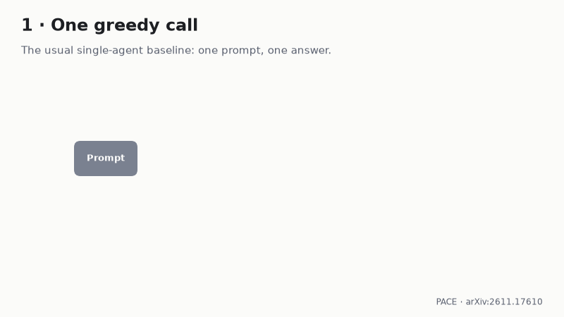
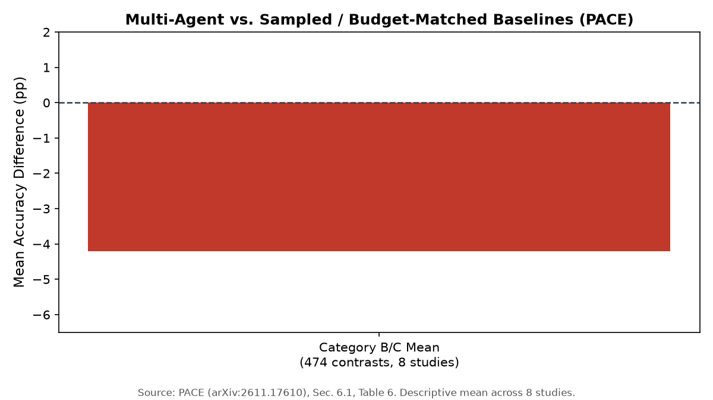
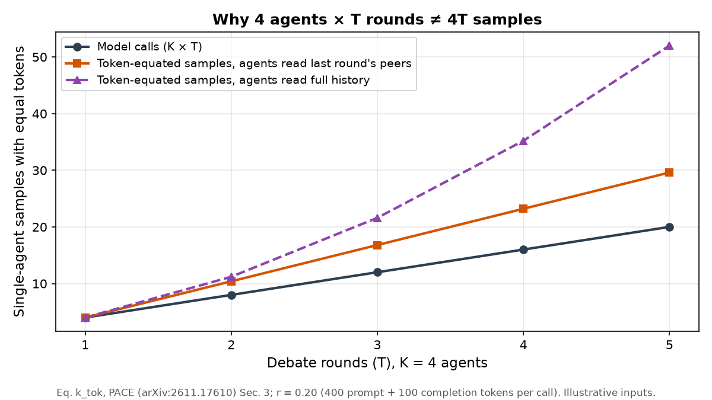

How to check whether a multi-agent LLM system beats a single model that is given the same token budget.
A debate between five agents over three rounds makes fifteen model calls, and in every round after the first each agent also reads what its peers wrote. Many evaluations compare that system against one greedy call from a single model. When the multi-agent system wins, three things are tangled together: communication between agents, the extra independent samples, and the extra test-time compute.
The fix is to compare against a single model that gets to spend the same tokens, for example by sampling several answers and taking a majority vote (self-consistency). I wrote PACE to make that comparison routine.

From one greedy call to a token-matched comparison. Findings shown at the end are from the PACE audit and controlled experiment.In PACE: More Agents, More Samples, or More Thinking? (arXiv:2611.17610), I audited 516 unique multi-agent configurations from 9 published empirical studies and grouped each comparison by the single-agent baseline it used: one greedy pass (Category A), several sampled answers (Category B), or a budget-matched baseline (Category C).

Mean difference between multi-agent systems and sampled or budget-matched single-agent baselines (474 contrasts, 8 studies). Descriptive mean; see Section 6.1 of the paper for the meta-analytic model.Debate costs more than its call count suggests, because prompts grow with peer messages. Suppose each call has 400 prompt tokens and 100 completion tokens, and in each round after the first, every agent reads the previous round's messages from its peers. Then a 3-agent, 2-round debate makes 6 calls but uses 3,600 tokens, the cost of 7.2 independent samples. The paper gives the general formula:
$$k_{\mathrm{tok}} = KT + (T-1)\,K(K-1)\,r, \qquad r = \frac{\ell}{c_p + \ell}$$where $K$ is the number of agents, $T$ the number of rounds, $c_p$ the prompt tokens and $\ell$ the completion tokens per call. If agents re-read the full history, the cost grows quadratically in $T$.

For 4 agents, the token-equated sample count pulls away from the call count as rounds increase (r = 0.20, illustrative inputs).Which way to round. Here $k_{\mathrm{tok}} = 7.2$, so no whole number of samples matches exactly. An 8-sample vote spends at least as many tokens as the debate: if the debate beats it, that is a real gain. A 7-sample vote spends fewer: if it matches or beats the debate, communication did not pay for its tokens. Neither pool is "the same budget"; each is fair in one direction.
PACE does not say multi-agent systems never work. With a single shared prompt, exchanging messages adds no information that independent samples lack. That leaves three candidate settings where communication can beat equal-compute sampling:
These are candidates, not effects the audit established.
pip install git+https://github.com/mahmoudsajjadi/pace.git
pace pool-size --agents 3 --rounds 2 --prompt-tokens 400 --msg-tokens 100
# k_tok 7.200 (r=0.2000), recommended pool size 8PACE is a preprint and has not yet been peer reviewed. Read it on Hugging Face or arXiv. Questions and counterexamples are welcome on the paper page or as GitHub issues.
Seyed Mahmoud Sajjadi Mohammadabadi, University of Nevada, Reno